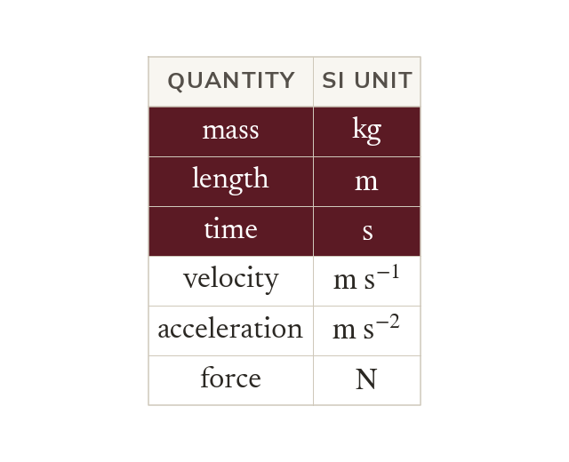
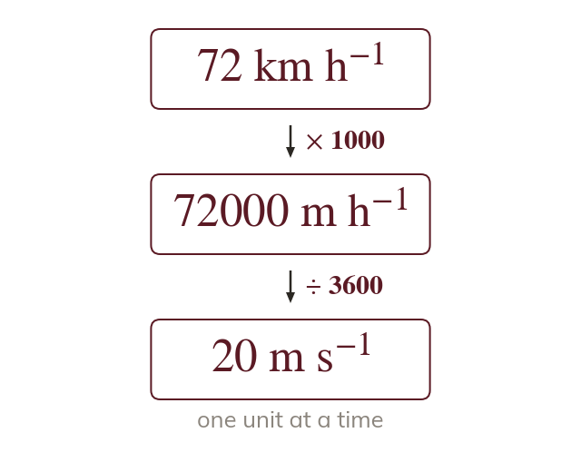
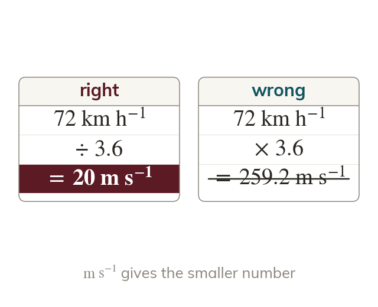
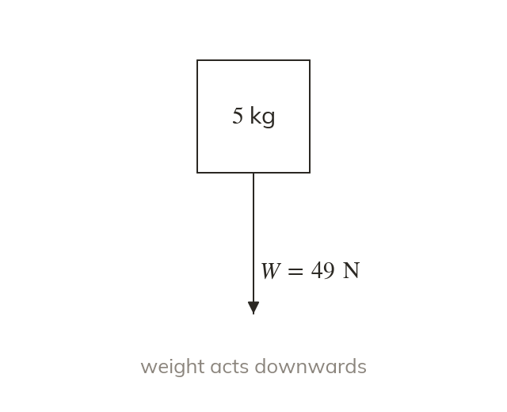
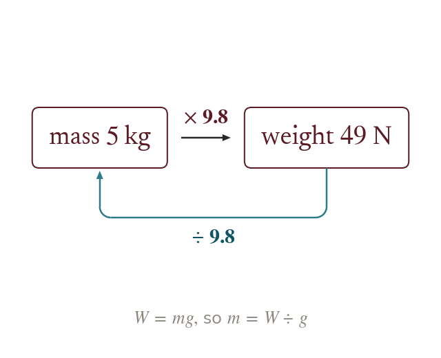

Three base units
Mechanics measures mass in kilograms, length in metres and time in seconds. Every other unit is built from these three.
Every mechanics answer is a number with a unit, and the formulae only work when every quantity is in SI units. Converting first, and keeping mass and weight apart, is what the kinematics and forces chapters build on next.
Work down the page at your own pace. Write every answer in your book first, then click to check it.
Read each card, then follow the worked examples one step at a time.

Mechanics measures mass in kilograms, length in metres and time in seconds. Every other unit is built from these three.

A compound unit is converted one part at a time. Change kilometres to metres, then hours to seconds.

A metre per second is a larger unit of speed than a kilometre per hour. So the same speed is a smaller number in
Pick an answer. If it's wrong, the feedback tells you which mistake it was.
Read each card, then follow the worked examples one step at a time.

Mass is the amount of matter in a body, measured in kilograms. Weight is the force of gravity on it, measured in newtons.

The weight of a mass of m kg is newtons, where Divide a weight by g to get back to the mass.
Pick an answer. If it's wrong, the feedback tells you which mistake it was.
Finished? Next lesson: M8.4 Working with Vectors.
For each skill, tap the one that is true for you today. Your Revise pages start with anything you mark Not yet.
Your ratings are saved on this device only.
Log in, then search for a code to practise that skill.